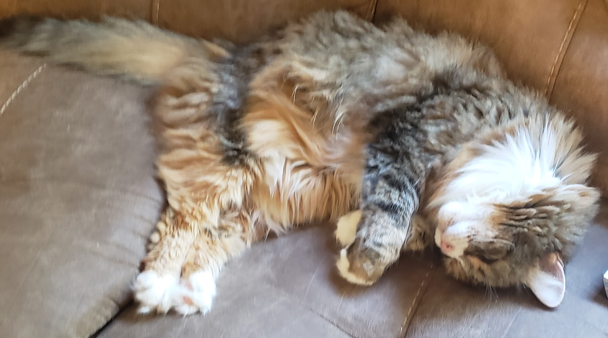
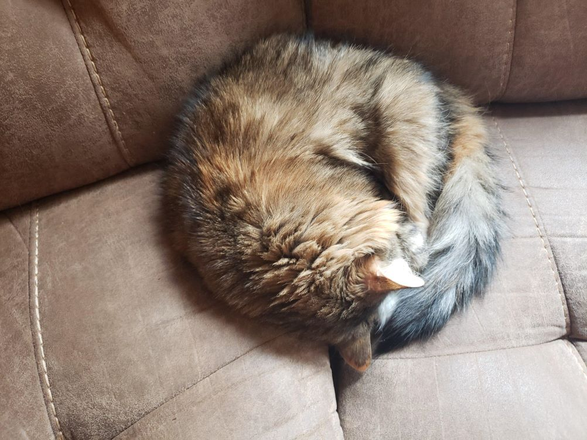
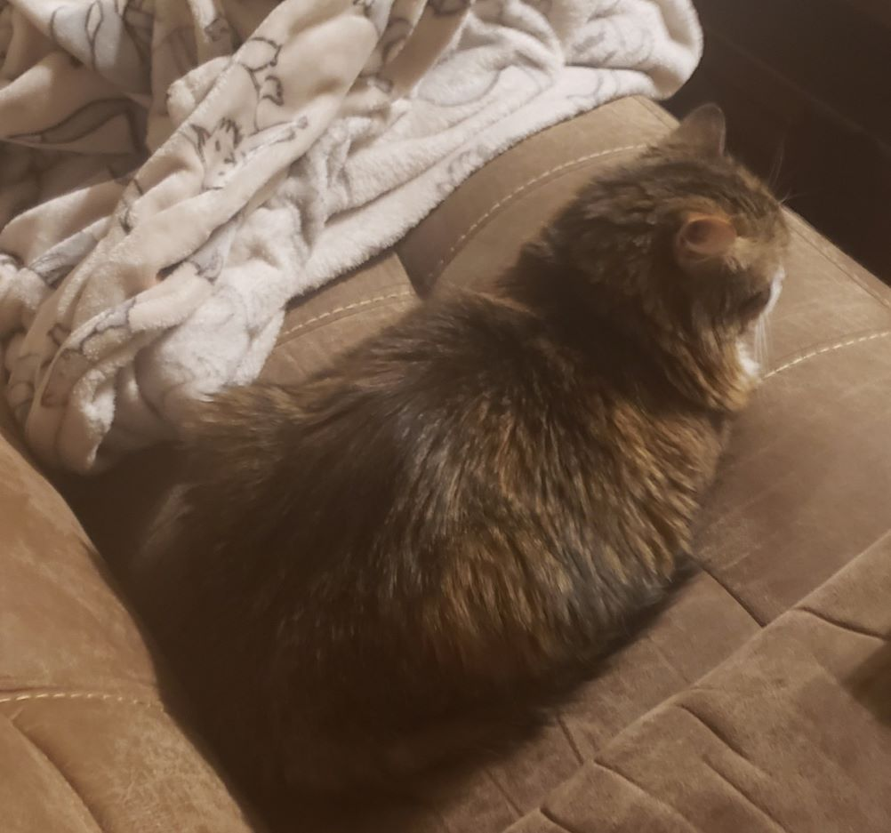
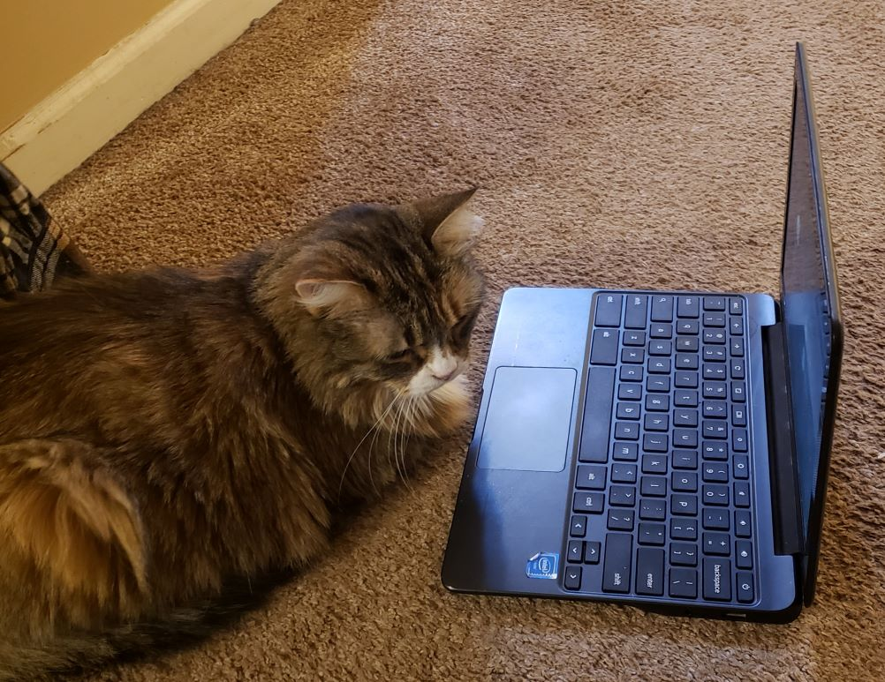

Profile
I used to be an "outdoor cat", and I spent my time outside, chasing mice and birds. When my family adopted me, I continued to go outside and enjoy nature. However, in my old age of about 17 years old -- the equivalent of 84 years for a human -- my humans have begun to keep me indoors. I am not a fan of this, but am able to cope by sneaking outside when they are not looking. My favorite foods are treats, chicken, and tuna.
Skills

Piano
Throughout my career as a professional cat, I have become quite adept at playing the piano. My skillset includes songs such as Random Notes, Cat Walking Across Piano, and Cat Sitting on Piano. These songs are mastered only by the most skilled of musicians, as they require one to play random notes with no plan or purpose whatsoever.


Food Imitation
Another one of my most valuable skills is that of food imitation. I am able to imitate a cinnamon roll and a loaf of bread! Such skills are of the upmost importance and are achieved only by the most amazing of food imitators.

Software Development
A very skilled programmer, I can stare at the screen of a computer for hours on end and understand nothing because I am a cat and cannot read. I have cultivated this lack of skill for years. I majored in Staring at a Computer but not Understanding Anything Thanks to a Lack of Literacy at the Harvard Cat University for Illiterate Felines and have recieved my Bachelors, Masters, and Doctorate from that college. When getting into such a prestigious college, I recieved a full ride scholarship for my incredible ability to not be able to read.